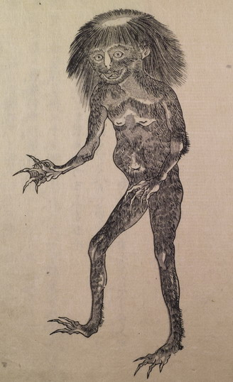

直立している河童。全身が薄い毛に覆われている。長髪で頭頂には皿のようなものがある。指の間には水掻があり、指先は鋭い。
著作者：赤松宋旦／出典：親書誌：U426_nichibunken_0236：利根川図志；トネガワズシ／日付：2010／資源識別子：U426_nichibunken_0236_0001_0000
Copyright (c)2010- International Research Center for Japanese Studies, Kyoto, Japan. All rights reserved.